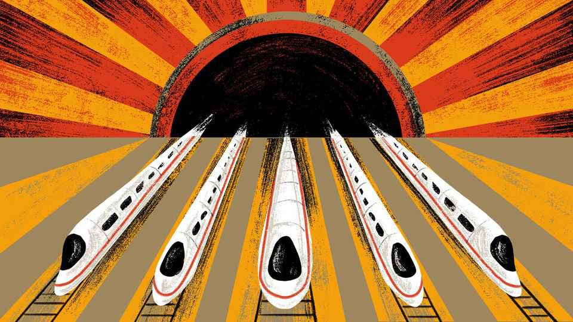

International | The Telegram

ACROSS THE democratic world, politicians and public intellectuals have a bad case of Chinese-train envy. A cottage industry has sprung up, involving books and podcasts by important people recounting silk-smooth rail journeys begun in Shanghai or Beijing, and wondering why America, Britain and other erstwhile industrial giants find public works so hard.
“We are talking 200-plus miles an hour and you can sit with a cup of coffee and it will not move,” sighs Adam Tooze, a historian at Columbia University, in a much-shared online discussion about China’s fast trains and other marvels. The host of that conversation, Ezra Klein, is the co-author of “Abundance”, a book that blames lawsuits, growth-killing regulations and squabbling politicians for saddling America with creaking power grids, shabby airports and slow trains. True, China’s Communist Party-controlled legal system is capable of high-handed abuses, the book allows. But it also allowed the country to roll out a high-speed network extending more than 23,000 miles (37,000km), at the same time as the state of California tried and failed to build a 500-mile rail line.
Some Western politicians draw still broader conclusions. Shaken by personal encounters with world-beating Chinese technology, they wonder why liberal democracies have fallen so far behind. Some sound ready to suspect that Western societies have become soft and spoiled. Leo Varadkar, a former prime minister of Ireland, recently wrote about glimpsing the future on trips to Asia. “For the first time since the 1800s, the rules of the world will not be written by Europeans or Americans alone,” he predicted. Mr Varadkar was dazzled by a fast Chinese train (in his case, boarded in the southern metropolis of Guangzhou) and impressed by Chinese and Indian students who work hard and do not expect the state to “cater for their every need for little or no charge”.
The propaganda value of trains that run on time is not lost on China’s rulers. Xi Jinping once hosted Russia’s president, Vladimir Putin, aboard a high-speed train, serenely pouring tea for his guest in this rolling metaphor for Chinese stability. Not a drop spilled, as a sign showed 301kph as their speed.
Alas, train-envy is not the only cause of Western self-doubt. Increasingly, when European officials tour Asia or meet Trump administration officials in Washington, they hear variants of the same scornful question: when will you realise that liberal values are a luxury you cannot afford? In the Middle East hosts mock Westerners for imagining that a liberal, rules-based order ever existed. In some European capitals officials who have long hankered for greater state intervention mutter that, if only the European Union abandoned foolishly liberal economic Euro-rules, it would be as dynamic as China. Nifty infrastructure is good for growth. But hangdog democrats are wrong to think that autocracies have cracked the code of economic dynamism, just as Mussolini fans mistakenly believed his claim to abolish train delays.
To authoritarians, fast trains are a glimpse of an ideal China: modern and orderly, with every passenger tracked by identity card. This columnist once pulled into a station in Xinjiang aboard a packed high-speed train, when a voice ordered passengers to stay seated for a police check. Hundreds sat meekly as officers marched up the aisle to escort this writer off for questioning.
China paid a price for its gleaming modernity. Economists and even retired senior officials admit in private that vast sums were wasted on underused bridges, trains and airports, in a country that still has hundreds of millions of poor people. Modernisation had winners and losers, including those living in the path of railway lines who were publicly shamed by party cadres, threatened with the loss of a job or roughed up by thugs until they moved. The best of a slew of books comparing America and China, “Breakneck” by Dan Wang, defines America as a “lawyerly society”, held back by litigious special interests. It also describes grave harms caused by China’s “engineering state”, run by planners and ideologues frightened by the creative energies of their own people.
More importantly, when Western democracies become less liberal, there is no reason to think they will magically become stern but efficient technocracies, as China or Singapore claim to be. The best case for Singapore’s governing system is that it puts the majority interest ahead of individual rights, in a spirit of bossy paternalism. But that compact draws on long-standing Asian traditions of family, clan and collective social bonds. When a Western liberal democracy becomes more repressive, it risks turning into the Hungary of Viktor Orban, or Mr Putin’s Russia.
There is an analogy to be drawn with those who lose or renounce a religious faith. A Catholic atheist may be very different from an Anglican or Jewish atheist, or from a Muslim non-believer. People are durably marked by that which they no longer believe. So it is with countries that once embraced liberal values.
In a democracy with a long history of free elections, traditions of sturdy individualism and scepticism of authority can be a check on high-and-mighty elites. But when such traditions are hijacked by populists, dangers follow. Silver-tongued demagogues peddle conspiracy theories and urge supporters to believe them, not “the experts”. The dark twin of pluralism is a society divided along angry factional lines. Don’t imagine a wise industrial policy will emerge, once the powerful pick winners and losers in a free-market economy. Brace instead for corruption.
Liberal democracies are in a funk. That is no reason to think they will be better off if they become less free. Indeed, for once-free countries, the journey into repression can be an especially perilous one. As every train passenger knows, the starting-point matters, as well as the destination. ■
Subscribers to The Economist can sign up to our Opinion newsletter, which brings together the best of our leaders, columns, guest essays and reader correspondence.